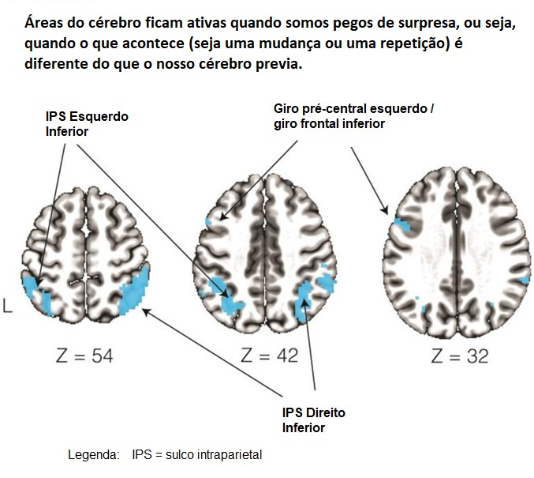

🧠 O que são Funções Executivas?
O "Coringa" do Cérebro

As Funções Executivas (FEs) não são uma habilidade cognitiva única, mas sim um conjunto de processos mentais de alto nível que atuam como o "gerente" ou "CEO" do cérebro. Elas são responsáveis por gerenciar e regular outras habilidades mais básicas, como a memória, a percepção e a linguagem.
🃏 A Alegoria dos "4 Ases e 1 Coringa"
Os "4 Ases" (Cognição Categórica)
São nossas habilidades cognitivas fundamentais:
- Percepção: Como captamos informações do mundo
- Linguagem: Como nos comunicamos
- Memória: Como armazenamos informações
- Práxis: Como executamos ações motoras
O "Coringa" (Funções Executivas)
Sozinhos, os "ases" são apenas conhecimento estático. O "Coringa" é a FE que nos permite usar e aplicar esses ases de forma flexível para atingir objetivos no mundo real.
💡 Em resumo:
Não basta ter memória; a Função Executiva é o que nos permite usar essa memória para planejar o futuro, resolver um problema ou adaptar nosso comportamento!
📝 Quiz: Seção 1
⚙️ Os Processos Principais
Flexibilidade, Inibição e Planejamento
As Funções Executivas são compostas por três processos centrais que trabalham em conjunto:
1. Flexibilidade Cognitiva
A "Mudança de Marcha"
É a capacidade de alternar entre diferentes tarefas, regras ou perspectivas de forma fluida. É como mudar de marcha em um carro conforme a situação exige.
Exemplo: Quando você está lendo este texto e alguém chama seu nome, você precisa interromper a leitura e mudar sua atenção para a pessoa.
💡 Descoberta importante: O cérebro pode aprender a esperar mudanças. Se você sabe que vai precisar trocar de tarefa com frequência, seu cérebro se prepara antecipadamente!
2. Inibição
O "Freio"
É a capacidade de controlar impulsos, suprimir respostas automáticas e ignorar distrações. Funciona como um freio mental.
Exemplo: No teste de Stroop, você vê a palavra "AZUL" escrita em tinta vermelha. Seu impulso é ler "azul", mas você precisa inibir isso e dizer a cor da tinta: "vermelho".
3. Planejamento
O "Arquiteto"
É a capacidade de formular e organizar planos para alcançar objetivos futuros. Como um arquiteto que projeta uma construção antes de começar.
Exemplo: Na Torre de Londres, você precisa reorganizar discos coloridos em pinos seguindo regras específicas, planejando cada movimento com antecedência.
📝 Quiz: Seção 2
🗺️ Onde as Funções Executivas Acontecem?
As Vias Neurais
🧠 Parte 1: Além dos Lobos Frontais
Historicamente, as Funções Executivas foram associadas apenas aos lobos frontais do cérebro. O famoso caso de Phineas Gage (1848), que sofreu uma lesão frontal e mudou radicalmente de personalidade e comportamento, reforçou essa ideia.
Hoje sabemos que as FEs dependem de redes executivas distribuídas que incluem não só regiões frontais, mas também áreas temporais e parietais. É um trabalho em equipe!
🔄 Parte 2: As Alças CSTC
As Funções Executivas dependem de circuitos chamados alças córtico-estriado-tálamo-corticais (CSTC):
Fluxo das Alças CSTC
Córtex → Núcleos da Base (Estriado) → Tálamo → Córtex
Existem duas alças principais para as Funções Executivas:
❄️ Alça Dorsolateral
Cognição "Fria"
Responsável por processos cognitivos lógicos e não-emocionais:
- Planejamento racional
- Flexibilidade cognitiva
- Memória de trabalho
- Tomada de decisão baseada em lógica
🔥 Alça Orbital-Ventromedial
Cognição "Quente"
Responsável por processos com carga emocional e social:
- Regulação emocional
- Tomada de decisão social
- Controle de impulsos emocionais
- Julgamento moral
🔗 Parte 3: Rede Fronto-Parietal
Para a flexibilidade cognitiva especificamente, a rede mais importante é a Rede Fronto-Parietal:
🌐 Rede Fronto-Parietal
Conecta o córtex frontal lateral com o córtex parietal. Esta rede forma um sistema robusto para:
- Monitorar o ambiente em busca de mudanças
- Adaptar o comportamento conforme necessário
- Alternar entre diferentes conjuntos de tarefas
- Aprender padrões de quando mudanças ocorrem
💡 Esta rede será o foco do estudo de fMRI que veremos na próxima seção!
📝 Quiz: Seção 3
🔬 Ilustrando a Flexibilidade na Prática
Estudo Moderno de fMRI
📚 Artigo Científico Original
Sali, A. W., Bejjani, C., & Egner, T. (2024). Learning Cognitive Flexibility: Neural Substrates of Adapting Switch-Readiness to Time-Varying Demands. Journal of Cognitive Neuroscience.
🔗 Leia o artigo completo aqui →🎯 Introdução ao Estudo
Um estudo recente (2024) usou ressonância magnética funcional (fMRI) para investigar como o cérebro ajusta a "prontidão para mudança" (switch-readiness) de acordo com a frequência de trocas de tarefa.
🧪 Como Funcionou o Experimento
Tarefa de Classificação
Os participantes viam números e tinham que julgá-los de duas formas diferentes:
- AZUL: Julgar por magnitude (menor ou maior que 5)
- VERMELHO: Julgar por paridade (ímpar ou par)
A cor do número indicava qual tarefa executar. Às vezes a tarefa se repetia, às vezes mudava!

📊 Manipulação Experimental
O experimento tinha três blocos com diferentes frequências de mudança:
- 25%: Mudanças eram raras (maioria repetições)
- 50%: Mudanças e repetições eram equilibradas
- 75%: Mudanças eram frequentes
🎨 O que se Observou
🧠 O Cérebro Aprende!
Quando as mudanças eram frequentes (75%), os participantes ficavam "prontos para mudar". Os custos de troca (o tempo extra necessário para trocar de tarefa) diminuíam!
Quando mudanças eram raras (25%), o cérebro "relaxava" e mantinha o foco na tarefa atual.
💡 Conclusão: O cérebro aprende "o quão flexível precisa ser" baseado no contexto!
🔍 Conexão Neural (fMRI Revelou)
A neuroimagem mostrou que a Rede Fronto-Parietal estava em ação:

Córtex Parietal (IPS - Sulco Intraparietal)
- Detectava quando ocorria uma "surpresa" (Erro de Predição)
- Quando o cérebro esperava repetição mas houve troca, o IPS "acendia"
- Sinal: "Ei, ajuste suas expectativas!"
Córtex Frontal Lateral
- Coordenava a troca entre tarefas
- Inibia a regra antiga e ativava a nova
- Trabalhava junto com o IPS para adaptar comportamento
🌐 Conclusão do Estudo
Este estudo mostra que Flexibilidade Cognitiva não é estática - é um processo dinâmico de aprendizagem mediado pela rede fronto-parietal. Nosso cérebro constantemente atualiza suas expectativas sobre quando mudanças vão ocorrer!
📝 Quiz: Seção 4
🎮 Agora é sua vez!
Você acabou de aprender sobre flexibilidade cognitiva e como o cérebro se adapta. Agora vamos experimentar na prática o mesmo teste usado no estudo de fMRI!
Escolha uma versão:
Teste Rápido
- 20 tentativas por bloco
- Duração: ~X-Y minutos
- Ideal para experimentar
- Visualização de resultados
Teste Completo
- 49 tentativas por bloco (protocolo original)
- Duração: ~X-Y minutos
- Análise estatística completa
- Trimming de outliers
📋 Instruções do Teste
Como Funciona:
- Você verá um número colorido na tela
- A COR indica qual tarefa realizar
🔵 AZUL = Tarefa de MAGNITUDE
O número é menor ou maior que 5?
🔴 VERMELHO = Tarefa de PARIDADE
O número é ímpar ou par?
⌨️ Como Responder:
- Tecla F (esquerda): Número menor que 5 OU ímpar
- Tecla J (direita): Número maior que 5 OU par
📱 Como Responder (Celular):
- Toque no LADO ESQUERDO da tela: Número menor que 5 OU ímpar
- Toque no LADO DIREITO da tela: Número maior que 5 OU par
⚡ Importante:
- O número aparece por apenas 1 segundo
- Responda o mais rápido e preciso possível
- Primeiro você fará uma prática com feedback
- Depois virão os blocos do teste sem feedback
Bloco Concluído!
Faça uma pequena pausa. Clique abaixo quando estiver pronto para o próximo bloco.
📊 Seus Resultados
📈 Tempos de Reação por Tipo de Tentativa
📉 Correlação: Switches vs. Custo
🎯 Acurácia por Bloco
🧠 O que aconteceu no seu cérebro?
Durante o teste, várias regiões da sua Rede Fronto-Parietal trabalharam em conjunto:
Sulco Intraparietal (IPS)
- Detectou quando a cor do número mudava
- Calculou "erros de predição" (surpresas)
- Atualizou suas expectativas sobre a frequência de mudanças
Córtex Frontal Lateral
- Inibiu a resposta da tarefa anterior
- Ativou a nova regra (magnitude ou paridade)
- Coordenou a troca entre tarefas
Rede Fronto-Parietal (Completa)
- Trabalhou como um sistema integrado
- Aprendeu os padrões ao longo dos blocos
- Ajustou sua "prontidão para mudar" de acordo com o contexto
🎓 Quiz Final
Teste seu conhecimento completo sobre Funções Executivas